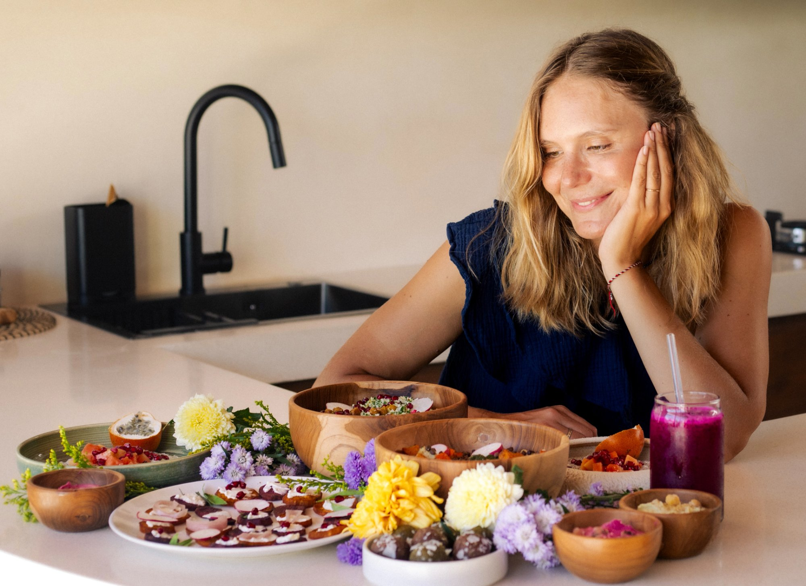

Accompagnement naturopathique
Reprends enfin le pouvoir sur ton corps naturellement
Tu as un diagnostic. Ou peut-être pas encore. Mais tu sais qu'il y a quelque chose qui ne va pas, depuis trop longtemps.
Peut-être que tu n'as pas encore vraiment modifié ton alimentation, parce que tu ne sais pas quoi changer ni par où attaquer. Peut-être que tu as déjà tout essayé, les compléments, les régimes, les forums, les consultations, et que tu es épuisée de chercher sans trouver.
Dans les deux cas, tu te retrouves au même endroit : sans cap clair, avec l'impression que ton corps te résiste, et une fatigue qui dépasse largement le physique.
Ce qu'il te manque, ce n'est pas forcément plus d'informations. C'est une vision globale, construite autour de ton terrain, de ton histoire, de ton rythme de vie.
Et le stress de vouloir tout comprendre seule, de tout gérer seule, entretient exactement ce que tu essaies de calmer.
Moi aussi, j'ai été là
J'avais une vie rythmée par la performance, dans l'audit financier. En 2020, tout s'est arrêté brutalement : articulations gonflées, douleurs lancinantes, incapacité à me lever. Après plusieurs mois d'errance médicale, le diagnostic : une spondylarthrite ankylosante, un trouble auto-immun inflammatoire chronique.
Lorsque j'ai voulu me soigner naturellement, en complément de mon traitement, je n'ai trouvé aucun accompagnement qui répondait vraiment à mes besoins. Tout me paraissait flou. Je lisais tout et son contraire sur internet, sans savoir à qui faire confiance ni quelle direction prendre. Je me suis retrouvée seule face à la douleur, la fatigue et l'incompréhension.
Après plusieurs années de formations, de recherches, de transformations progressives : mes troubles digestifs ont disparu, et ma maladie est aujourd'hui sous silence, sans biothérapie. Mais cela m'a demandé du temps, de l'énergie et un engagement total. Et je sais que tout le monde n'a pas ce temps-là, ni ces connaissances.
"Le vrai tournant, ça n'a pas été un complément ou un régime. Ça a été de remettre ma santé au cœur de mes priorités."Aurélie Held, naturopathe spécialisée en troubles inflammatoires, digestifs et déséquilibres hormonaux
RESET, c'est un espace de travail en profondeur, sur-mesure, ancré dans la naturopathie fonctionnelle. Pas un protocole générique. Un accompagnement construit autour de toi.
Grâce à RESET, tu vas...
Si tu te reconnais dans ces mots, on a probablement des choses à se dire.
Je veux rejoindre l'accompagnement →Places limitées · Sans engagement à ce stade
Comprendre pour agir
La fatigue, les douleurs, les poussées inflammatoires, les troubles digestifs : tout ça est souvent lié. En naturopathie fonctionnelle, on considère le corps comme un système global où tout est connecté. Ce qui se passe dans ton intestin influence ton système immunitaire. Ton niveau de stress agit sur ton microbiote. Ton microbiote influence ton inflammation. Et ton inflammation, elle, s'exprime partout dans ton corps.
Santé intestinale
L'intestin est au cœur de ton immunité. Un microbiote déséquilibré ou une perméabilité intestinale augmentée entretient l'inflammation de façon silencieuse.
Alimentation
Ce que tu manges chaque jour envoie des signaux à ton système immunitaire. Certains aliments alimentent l'inflammation, d'autres l'apaisent. La personnalisation est clé.
Système nerveux
Le stress chronique maintient ton corps en état d'alerte permanent. Il amplifie les réactions inflammatoires et perturbe la régulation hormonale et digestive.
Équilibre hormonal
Les hormones régulent presque tous les systèmes du corps : immunité, inflammation, digestion, énergie, humeur. Un déséquilibre hormonal, qu'il s'agisse du cycle féminin, de la thyroïde ou des surrénales, peut entretenir ou amplifier l'ensemble des manifestations que tu ressens. C'est pourquoi l'axe hormonal est systématiquement évalué dans chaque accompagnement RESET.
C'est pourquoi un protocole générique ne fonctionne pas.
Il faut comprendre ton terrain, dans sa globalité.
Ce que tu reçois
Un accompagnement sur 4 mois, en ligne, pensé pour aller chercher la cause profonde et construire avec toi une stratégie qui tient dans ta vie réelle.
Toutes les séances se font en visioconférence, depuis chez toi.
Avant la première séance
Tu reçois un questionnaire détaillé à remplir avant notre première rencontre. Il me permet d'arriver préparée et de ne pas perdre de temps en séance sur les généralités.
Séance 1 — 1h30 · En ligne
On cartographie ton histoire, tes déclencheurs, ton alimentation et ton environnement. On aborde directement le thème de la digestion et de l'alimentation anti-inflammatoire. Tu repars avec un protocole clair à mettre en place jusqu'à la prochaine séance.
Séance 2 — 1:1 · En ligne
On fait le bilan, on affine le protocole mis en place après la première séance et on aborde une nouvelle thématique en profondeur, adaptée à ce que tu vis.
Séance 3 — 1:1 · En ligne
On fait le bilan, on affine le protocole et on explore les croyances limitantes liées à la maladie — celles qui, parfois, nous enferment dans une certaine relation à notre corps et nous empêchent de progresser vraiment.
Séance 4 — 30 min · Clôture · En ligne
On revisite le chemin parcouru, on valide tes acquis et on dessine ensemble la suite. Tu repars avec une feuille de route claire pour les mois à venir.
En complément
2 lives collectifs au cours de l'accompagnement
Des sessions en groupe pour approfondir des thématiques communes et créer du lien avec d'autres personnes qui traversent les mêmes problématiques.
Inclus à chaque séance et tout au long de l'accompagnement :
Tu remplis un questionnaire · je te recontacte sous 48h
Tu t'es reconnue dans la colonne de gauche ?
C'est exactement pour toi que RESET a été conçu.
Je sécurise ma place →Tu remplis un questionnaire · Aurélie te recontacte sous 48h
Une question que tu te poses peut-être
Les troubles inflammatoires chroniques ne se sont pas installés en une semaine. Ils sont le résultat d'années de déséquilibres accumulés — dans l'alimentation, le système nerveux, le microbiote, les habitudes de vie. Les rééquilibrer demande du temps, de la progressivité et de la constance.
Le corps se régule lentement
L'inflammation chronique n'est pas un état qu'on "éteint" avec un protocole de 3 semaines. Le corps a besoin de temps pour intégrer les changements et retrouver ses propres mécanismes de régulation.
Les habitudes s'ancrent dans la durée
Un changement alimentaire ou de mode de vie ne devient vraiment efficace que s'il est maintenu. L'espacement des séances te permet d'expérimenter, d'observer, et d'ajuster en fonction de ta réalité.
L'accompagnement doit être complet
Je crois profondément qu'un accompagnement sérieux ne peut pas se résumer à une ou deux séances. Pour aller chercher les causes réelles et construire une stratégie durable, il faut du temps, de la profondeur et de la continuité.
RESET n'est pas une solution rapide. C'est un investissement dans ta santé, pensé pour que les résultats durent vraiment.
Témoignages
Ils ont fait le premier pas. Toi aussi, tu peux.
Les places pour le prochain accompagnement sont limitées.
Je sécurise ma place →Tu remplis un questionnaire · Aurélie te recontacte sous 48h · Sans engagement
Oui, complètement. La naturopathie ne remplace pas la médecine allopathique et ne te demandera jamais d'arrêter un suivi médical en cours. Mon travail est complémentaire : on agit sur ton terrain, ton alimentation, ton mode de vie, pour soutenir ton corps et potentiellement réduire l'intensité des manifestations inflammatoires. J'ai moi-même traversé un trouble inflammatoire chronique et travaillé en parallèle d'un suivi rhumatologique.
Oui. L'errance médicale est très fréquente pour les troubles inflammatoires chroniques, parfois pendant des années avant un diagnostic officiel. Si tu ressens des manifestations chroniques (fatigue, douleurs articulaires, troubles digestifs, réactions inflammatoires récurrentes) et que tu veux agir, RESET est tout à fait adapté.
Les séances se font en visioconférence. La première séance dure 1h30. Les deux suivantes durent environ 1 heure. Entre chaque séance, tu reçois un protocole écrit détaillé et tu peux m'écrire si tu as des questions.
Oui, le paiement en 2 ou 3 fois est possible. On en discute directement lors de l'appel découverte.
Je comprends. Et non, tu n'as pas besoin d'aller "un peu mieux" avant de commencer. Au contraire, RESET est pensé pour les personnes qui sont épuisées de chercher seules. On commence là où tu en es, au rythme qui te convient. Le premier objectif est toujours de te soulager, pas de t'en demander encore plus.
Ce n'est pas obligatoire, mais si nécessaire, je peux te recommander des analyses de biologie fonctionnelle (microbiote, carences, inflammation...) pour affiner l'accompagnement. Je t'aide à choisir les plus pertinentes pour toi, à un tarif avantageux.
Certaines mutuelles prennent en charge une partie des consultations de naturopathie. Je te fournis une facture que tu peux transmettre à ta complémentaire santé. N'hésite pas à vérifier directement avec ta mutuelle avant de commencer.
Les compléments peuvent faire partie de l'accompagnement, mais toujours de façon ciblée, selon ton profil et tes besoins. Je t'explique pourquoi, lesquels choisir, à quelle dose, et pour combien de temps. Rien d'automatique, rien d'inutile. Je m'adapte également à ton budget.
Je comprends ton doute. Beaucoup de personnes que j'accompagne ont déjà tout essayé, sans transformation durable. RESET est différent : il ne s'agit pas d'un énième régime ni d'un protocole générique. C'est un accompagnement sur mesure qui prend en compte ton histoire, ce que tu vis, ton mode de vie et ton rythme. On ne cherche pas juste à agir sur ce qui se voit en surface : on cherche les causes profondes. Et surtout, tu n'es pas seule. Oui, ça en vaut la peine, surtout si tu es prête à faire de toi une priorité.
Un accompagnement naturopathique ne se substitue en aucun cas à la médecine allopathique ni à un traitement médical déjà en cours. Aucun diagnostic ni prescription médicale n'est effectué lors des séances. En cas de pathologie ou de traitement en cours, il est impératif de consulter ou d'informer ton médecin traitant.